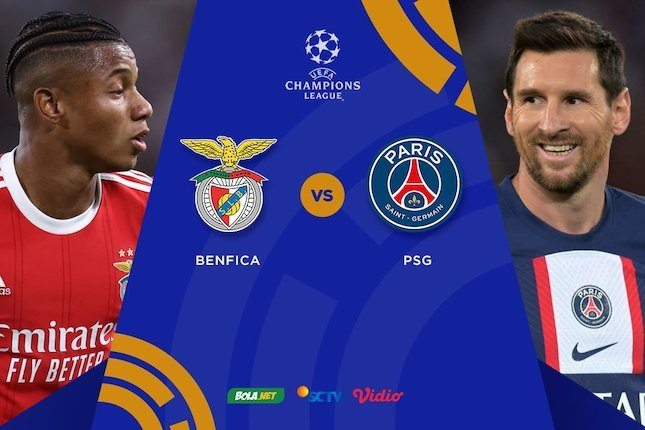
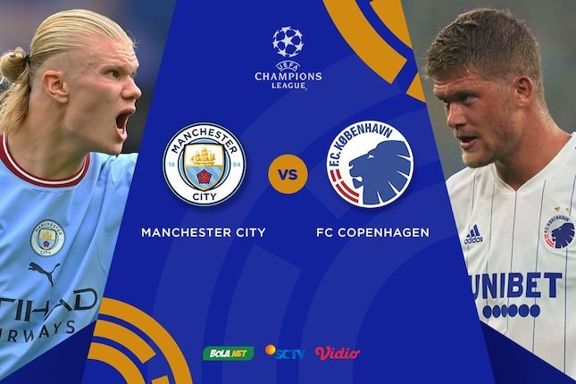
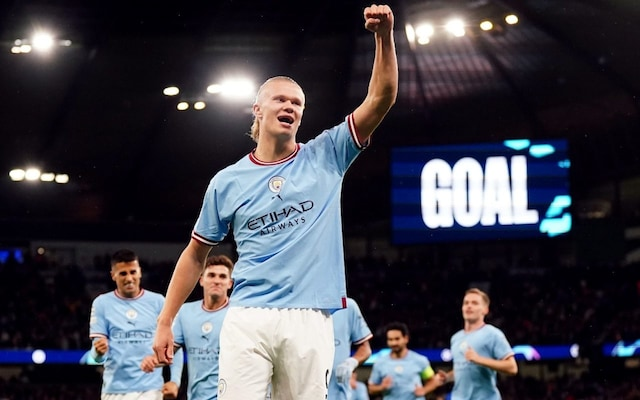

Klik Disini untuk melihat biodata pembuat web
BENFICA VS PSG
PSG harus puas bermain imbang 1-1 kala menyambangi markas Benfica, Estadio da Luz dalam laga matchday 3 fase grup Liga Champions 2022/2023, Kamis (6/10/2022) dini hari WIB.
Dua gol seluruhnya tercipta di babak pertama. PSG unggul lebih dahulu berkat gol Lionel Messi sebelum disamakan oleh tuan rumah lewat gol bunuh diri Danilo Pereira.
Berkat hasil ini, PSG masih memuncaki klasemen Grup H dengan poin 7, sama dengan poin milik Benfica di posisi kedua.
MANCHESTER CITY VS COPENHAGEN
The Citizens -julukan Man City- berpesta gol dalam laga matchday ketiga Grup G Liga Champions 2022-2023 itu.
Laga Manchester City vs FC Copenhagen sendiri digelar d Stadion Etihad, Kamis (6/10/2022) dini hari WIB. Erling Haaland kembali menggila usai mencetak dua gol (7'dan 32'). Kemudian, gol lain Man City dicetak oleh Riyad Mahrez (55'), gol bunuh diri Davit Khocholava (39'), dan julian Alvarez (76').
Klik Disini untuk BeritaBola selanjutnya